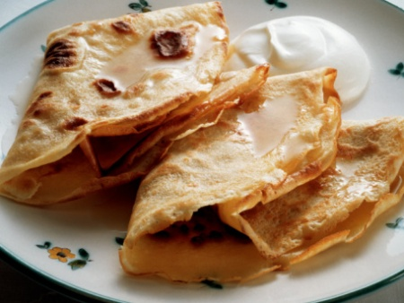

11 receitas para o café da manhã para começar o dia bem
2021.06.21 21:33

Ir ao conteúdo Página principal Cursos online Mail gigante Loja Virtual Construtor de sites Curso de inglês Antivírus Produtos E-mail Configurações da conta Conheça os produtos Terra Produtos PUBLICIDADE Capa parceiros Guia da Cozinha
11 receitas para o café da manhã para começar o dia bem
14 ago 2020 10h01 ver coment√°rios Publicidade Guia da Cozinha - 11 receitas para o café da manhã para começar o dia bem Foto: Guia da CozinhaCom essas receitas de café da manhã, você tem um lanche de hotel no conforto do seu lar!
Notícias relacionadas
Bolo de mandioca e coco fácil e saboroso Doce de tapioca com coco pronto em 20 minutos Bolo prestígio recheado para a sobremesaTem coisa mais gostosa do que acordar e tomar aquele café da manhã de hotel, com toda a calma do mundo e saboreando um monte de quitutes deliciosos? Se você gosta de fazer isso, que tal escolher algumas dessas receitas para o café da manhã em casa e começar o dia com disposição e alegria?
Tem bolo, pão de queijo, cappuccino e até receitas que são feitas no liquidificador. Sabor e praticidade andam juntos e o Guia da Cozinha vai te provar isso! Confira as melhores receitas para o café da manhã que lembram aquela viagem deliciosa em família.
Pão de queijo simples
Guia da Cozinha - 11 receitas para o café da manhã para começar o dia bem Foto: Guia da Cozinha Tempo: 30min
Rendimento: 35 unidades
Dificuldade: fácil
Ingredientes
400g de polvilho doce 400g de queijo parmesão ralado 2 caixas de creme de leite (400g) (aproximadamente) Óleo para untarModo de preparo
Em uma vasilha, junte o polvilhe doce, o parmesão e misture. Adicione o creme de leite, aos poucos, misturando com as mãos até formar uma massa homogênea e firme. É necessário que o creme de leite seja adicionado aos poucos, para não perder o ponto da massa. Retire porções pequenas da massa e modele bolinhas. Coloque, uma ao lado da outra, em uma fôrma grande untada e leve ao forno alto, preaquecido, por 15 minutos ou até dourar. Retire e sirva em seguida.
Cappuccino caseiro
Guia da Cozinha - 11 receitas para o café da manhã para começar o dia bem Foto: Guia da Cozinha Tempo: 10min
Rendimento: 700g
Dificuldade: fácil
Ingredientes
1 xícara (chá) de café solúvel 3 xícaras (chá) de leite em pó 1 xícara (chá) de chocolate em pó 1 xícara (chá) de açúcar 1 colher (sopa) de canela em pó 1 colher (sopa) de bicarbonato em póModo de preparo
Em uma tigela, amasse o café solúvel com um amassador de batata ou colher.
Adicione o leite em pó, o chocolate, o açúcar, a canela, o bicarbonato e misture. Transfira para potes com tampa e conserve por até 2 meses.
Para preparar, coloque de 2 a 3 colheres (sopa) do cappuccino em uma xícara com 250ml de água quente e misture até dissolver. Sirva em seguida.
Panqueca de omelete
Guia da Cozinha - 11 receitas para o café da manhã para começar o dia bem Foto: Guia da Cozinha Tempo: 40min
Rendimento: 4 porções
Dificuldade: fácil
Ingredientes
8 ovos 4 colheres (sopa) de farinha de trigo Sal e cheiro-verde picado a gosto Manteiga para untarRecheio
300g de presunto fatiado 300g de queijo mussarela fatiado 200g de cream cheese 1/2 xícara (chá) de cheiro-verde picadoModo de preparo
Em uma tigela, bata os ovos com um batedor manual até ficar aerado. Adicione a farinha, sal, cheiro-verde e bata novamente para misturar.
Aqueça uma frigideira antiaderente untada, em fogo médio, e despeje uma concha da massa. Frite até dourar dos dois lados.
Retire e repita o procedimento de concha em concha até acabar a massa.
Divida o presunto, a mussarela e o cream cheese misturado com o cheiro-verde entre os discos de panqueca e enrole como rocamboles. Polvilhe com cheiro-verde e sirva.
Bisnaguinha caseira de liquidificador
Guia da Cozinha - 11 receitas para o café da manhã para começar o dia bem Foto: Guia da Cozinha Tempo: 1h (+1h de descanso)
Rendimento: 25 unidades
Dificuldade: fácil
Ingredientes
2 tabletes de fermento biológico fresco (30g) 2 colheres (sopa) de açúcar 3 gemas 2 ovos 3 colheres (sopa) de manteiga derretida 1 e 1/2 xícara (chá) de leite morno 1 colher (chá) de sal 6 e 1/2 xícaras (chá) de farinha de trigo (aproximadamente) Óleo e farinha de trigo para untar e enfarinharModo de preparo
No liquidificador, bata o fermento, o açúcar, 2 gemas, os ovos, a manteiga, o leite e o sal. Transfira para uma tigela e junte a farinha, aos poucos, sovando até formar uma massa homogênea que desgrude das mãos. Se necessário, adicione mais farinha.
Modele bisnaguinhas do tamanho desejado e coloque em uma fôrma grande untada e enfarinhada, deixando espaço entre elas. Cubra e deixe descansar por 1 hora. Pincele com a gema restante batida e leve ao forno médio, preaquecido, por 20 minutos ou até dourar. Deixe amornar e sirva.
Bolo de fubá cremoso com goiabada
Guia da Cozinha - 11 receitas para o café da manhã para começar o dia bem Foto: Guia da Cozinha Tempo: 50min
Rendimento: 10 porções
Dificuldade: fácil
Ingredientes
4 ovos 3 e 1/2 xícaras (chá) de leite 2 xícaras (chá) de açúcar 1 xícara (chá) de farinha de trigo 4 colheres (sopa) de manteiga 1 e 1/2 xícara (chá) de queijo parmesão ralado 2 e 1/2 xícara (chá) de fubá 1 colher (sopa) de fermento em pó Margarina e farinha de trigo para untarCobertura
1 xícara (chá) de goiabada em cubos 4 colheres (sopa) de águaModo de preparo
No liquidificador, bata os ovos, o leite, o açúcar, a farinha, a manteiga e o parmesão até ficar homogêneo. Despeje em uma tigela e misture o fubá e o fermento com uma colher. Transfira para uma fôrma retangular média, untada e enfarinhada, e leve ao forno médio, preaquecido, por 30 minutos ou até firmar e dourar. Retire e deixe amornar. Para a cobertura, leve a goiabada e a água ao fogo baixo até dissolver e formar uma calda. Desligue, deixe amornar e espalhe sobre o bolo. Corte em pedaços e sirva em seguida.
Pão caseiro fofinho
Guia da Cozinha - 11 receitas para o café da manhã para começar o dia bem Foto: Guia da Cozinha Tempo: 1h20 (+1h de descanso)
Rendimento: 3 unidades
Dificuldade: fácil
Ingredientes
3 tabletes de fermento biológico fresco (45g) 2 colheres (sopa) de açúcar 1 colher (sopa) de sal 2 xícaras (chá) de água morna 2 ovos 1 xícara (chá) de óleo 1kg de farinha de trigo (aproximadamente) Farinha de trigo para enfarinhar Óleo e farinha de trigo para untarModo de preparo
Em uma tigela, misture o fermento e o açúcar até dissolver por completo. Adicione o sal e a água e misture. Acrescente os ovos e o óleo e misture. Junte a farinha, aos poucos, sovando a massa até que desgrude das mãos. Se necessário, acrescente mais farinha.
Divida a massa em 3 partes. Abra cada uma com um rolo, sobre uma superfície enfarinhada, formando um retângulo. Enrole como rocambole e modele o pão, colocando cada 1 em uma fôrma de bolo inglês média untada e enfarinhada. Cubra e deixe descansar por 1 hora.
Leve ao forno médio, preaquecido, por 40 minutos ou até dourar. Deixe esfriar, desenforme, embale e venda.
Panqueca americana recheada
Guia da Cozinha - 11 receitas para o café da manhã para começar o dia bem Foto: Guia da Cozinha Tempo: 30min
Rendimento: 2 porções
Dificuldade: fácil
Ingredientes
1 e 1/2 xícara (chá) de farinha de trigo 1 colher (café) de fermento em pó 1 colher (café) de açúcar 1 e 1/4 de xícara (chá) de leite 1 ovo 3 colheres (sopa) de manteiga derretida 2/3 de xícara (chá) de Nutella® Nutella® e morangos para decorarModo de preparo
Em uma tigela, misture a farinha, o fermento, o açúcar, o leite, o ovo e a manteiga até formar uma massa homogênea. Aqueça uma frigideira antiaderente, em fogo médio, e coloque uma concha pequena da massa, espalhando com uma colher e girando para espalhar. Coloque uma colher da Nutella®, mais um pouco de massa e frite por 3 minutos ou até firmar. Vire a massa com uma espátula e deixe dourar do outro lado. Retire e repita o procedimento com a massa e a Nutella® restantes. Desligue, transfira para um prato e sirva decorado com Nutella® e morangos.
Broa crocante de fubá
Guia da Cozinha - 11 receitas para o café da manhã para começar o dia bem Foto: Guia da Cozinha Tempo: 1h
Rendimento: 25 unidades
Dificuldade: fácil
Ingredientes
2 xícaras (chá) de fubá 1 xícara (chá) de farinha de trigo (aproximadamente) 1 colher (chá) de sal 1 colher (sopa) de erva-doce 1/2 xícara (chá) de açúcar 3 ovos 1 colher (chá) de bicarbonato de sódio 5 colheres (sopa) de óleo 5 colheres (sopa) de margarina 1 xícara (chá) de leite Óleo para untar Fubá para polvilharModo de preparo
Em uma tigela, misture o fubá, a farinha, o sal, a erva-doce, o açúcar e reserve. Bata no liquidificador os ovos, o bicarbonato, o óleo, a margarina e o leite por 1 minuto. Despeje sobre os ingredientes secos e misture com uma colher até formar uma massa homogênea e macia que desgrude das mãos. Se necessário, junte mais farinha. Pegue porções da massa e modele bolas médias com as mãos untadas. Transfira para uma fôrma grande untada e polvilhada com fubá, um do lado do outro. Leve ao forno médio, preaquecido, por 30 minutos ou até dourar levemente. Retire, polvilhe com fubá e sirva.
Omelete de liquidificador
Guia da Cozinha - 11 receitas para o café da manhã para começar o dia bem Foto: Guia da Cozinha Tempo: 30min
Rendimento: 1
Dificuldade: fácil
Ingredientes
1 colher (chá) de azeite 5 ovos 3 colheres (sopa) óleo 2 colheres (sopa) rasas de farinha de trigo 1 colher (sopa) de queijo parmesão ralado 1 colher (café) de alho amassado 1 xícara (chá) de presunto em cubos 1 tomate picado sem sementes 1/2 xícara (chá) de azeitonas verdes em rodelas Sal, pimenta-do-reino e cheiro-verde picado a gostoModo de preparo
Em uma frigideira antiaderente, coloque o azeite e reserve. No liquidificador, bata os ovos, o óleo, a farinha, o parmesão e o alho até ficar homogêneo. Despeje em uma tigela, adicione o presunto, o tomate, a azeitona, sal, pimenta, cheiro-verde e misture. Leve a frigideira ao fogo médio e despeje metade da mistura, dourando dos dois lados. Repita o procedimento com o restante da massa e sirva.
Biscoito de nata com geleia de amora
Guia da Cozinha - 11 receitas para o café da manhã para começar o dia bem Foto: Guia da Cozinha Tempo: 1h15 (+30min de descanso)
Rendimento: 50 unidades
Dificuldade: fácil
Ingredientes
2 xícaras (chá) de farinha de trigo 2 xícaras (chá) de maisena 7 colheres (sopa) de açúcar 1 colher (café) de sal 1 xícara (chá) de manteiga 1 ovo 1 xícara (chá) de nata Margarina para untarGeleia
3 xícaras (chá) de amora fresca 5 colheres (sopa) de açúcar 1/2 xícara (chá) de águaModo de preparo
Para a geleia, misture em uma panela a amora, o açúcar, a água e leve ao fogo baixo, mexendo algumas vezes, até formar uma geleia.
Desligue, deixe esfriar e transfira para um pote de vidro.
Em uma tigela, misture a farinha, a maisena, o açúcar, o sal, a manteiga, o ovo e a nata até formar uma massa homogênea e macia.
Cubra e leve à geladeira para descansar por 30 minutos. Faça rolinhos com a massa e corte em pequenas fatias.
Coloque em uma fôrma grande untada, um ao lado da outra, e leve ao forno médio, preaquecido, por 15 minutos ou até dourar levemente.
Retire, deixe amornar e sirva com a geleia.
Bolo de fubá formigueiro com calda de chocolate e café
Guia da Cozinha - 11 receitas para o café da manhã para começar o dia bem Foto: Guia da Cozinha Tempo: 50min
Rendimento: 8 porções
Dificuldade: fácil
Ingredientes
1 e 1/2 xícara (chá) de leite 3 ovos 2 xícaras (chá) de açúcar 1 xícara (chá) de óleo 2 xícaras (chá) de fubá 1 xícara (chá) de farinha de trigo 1/2 xícara (chá) de chocolate granulado 1 colher (sopa) de fermento em pó químico Manteiga e farinha de trigo para untarCalda
1 lata de leite condensado 4 colheres (sopa) de chocolate em pó 1 colher (sopa) de café solúvel 1 colher (sopa) de manteigaModo de preparo
No liquidificador, bata o leite, os ovos, o açúcar, o óleo e o fubá até ficar homogêneo. Transfira pra uma vasilha, adicione a farinha de trigo, o chocolate granulado e o fermento e misture com uma colher. Despeje em uma fôrma de 22cm x 30cm untada e enfarinhada, e leve ao forno médio, preaquecido, por 30 minutos ou até dourar. Retire e deixe amornar. Para a calda, leve ao fogo médio todos os ingredientes, mexendo até engrossar levemente. Deixe amornar, espalhe sobre o bolo e sirva em seguida.
PublicidadeVeja também:
Guia da Cozinha Doce de tapioca com coco PublicidadeRecomendado para você
Receitas
Bolo de mandioca e coco f√°cil e saboroso
Receitas
Doce de tapioca com coco pronto em 20 minutos
Receitas
Bolo prestígio recheado para a sobremesa
Receitas
Receitas de bolo de liquidificador simples e deliciosas
Receitas
12 receitas práticas para um almoço rápido
PublicidadeÚltimas notícias
Receitas
Receitas de escondidinho: 15 opções de dar água na boca
Receitas
Queijadinha deliciosa pronta em 30 minutos
Receitas
Espaguete alho e óleo com maionese de atum delicioso
Receitas
Pavê de Danoninho®: sobremesa que vai agradar toda a criançada
Receitas
Caldinho de feij√£o com bacon na caneca
PublicidadeMais lidas do Terra
01Receitas
Cappuccino cremoso f√°cil de fazer
02Entretenimento
Âncora dá bronca em jornalista na GloboNews: "Pare de falar"
03Brasil
"Nenhum nome do centro tem musculatura sozinho para enfrentar Lula ou Bolsonaro", diz Rodrigo Maia
04Carros e Motos
SUV econômico: veja os 5 campeões de consumo na cidade
05Entretenimento
Âncora da Globo se comove ao noticiar morte de colega da TV
06Moda
Isis Valverde chama atenção com jaqueta de tricô gigante
07Horóscopo
Os 4 signos mais inovadores do zodíaco
08Coronavírus
Nise Yamaguchi entra com ação contra senadores da CPI
09Jogos Olímpicos de Tóquio
Com Daniel Alves e outros nove que atuam no Brasil, Jardine convoca Seleção para Olimpíada; veja a lista!
Publicidade Publicidade- 13 dicas para um café da manhã nutritivo - Caldo Bom
- Receitas de café da manhã: 7 opções para sair da rotina .
- 10 receitas de café da manhã saudável em até 5 minutos .
- Especial café da manhã - Panelinha
- Receita de Panqueca americana | CyberCook
- 8 sugestões para um café da manhã saudável, delicioso e .
- → 20 melhores RECEITAS PARA O CAFÉ DA MANHÃ .
- 11 receitas para o café da manhã para começar o dia bem
- 15 ideias de café da manhã para começar o dia bem
- 32 receitas que vão te ajudar a preparar um café da manhã .
- 13 dicas para um café da manhã nutritivo - Caldo Bom
- Receitas de café da manhã: 7 opções para sair da rotina .
- 10 receitas de café da manhã saudável em até 5 minutos .
- Especial café da manhã - Panelinha
- Receita de Panqueca americana | CyberCook
- 8 sugestões para um café da manhã saudável, delicioso e .
- → 20 melhores RECEITAS PARA O CAFÉ DA MANHÃ .
- 11 receitas para o café da manhã para começar o dia bem
- 15 ideias de café da manhã para começar o dia bem
10 saudável em até 5 minutos · 1. Bolo de chocolate com 3 ingredientes · 2 . - 32 receitas que vão te ajudar a preparar um café da manhã .
10 saudável em até 5 minutos · 1. Bolo de chocolate com 3 ingredientes · 2 .
